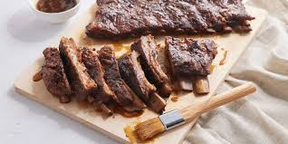

Pork ribs are a cut of pork popular in Western and Asian cuisines.
The ribcage of a domestic pig, meat and bones together, is cut into usable pieces, prepared by smoking, grilling, or baking usually with a sauce, often barbecue and then served.